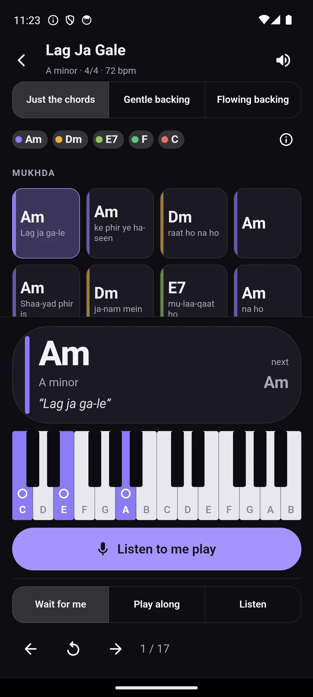
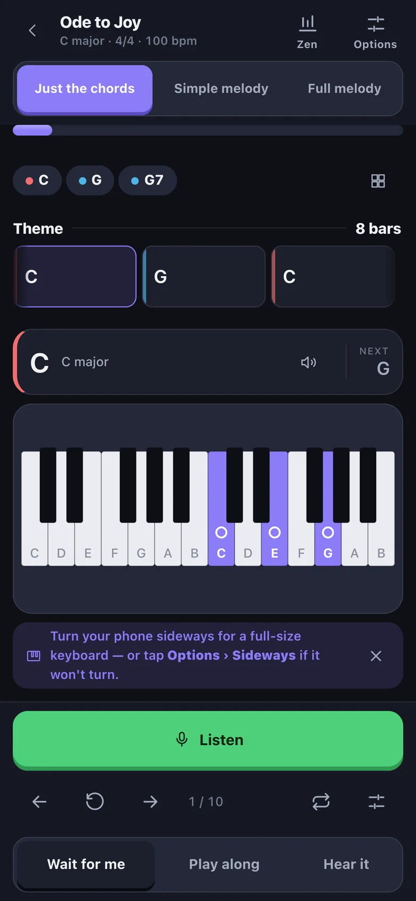

First version, 23 August
Dark by default. I pictured a phone on a music stand in a dim room.

Now, light by default
Most practice happens in daylight, next to white keys. A near-black screen there was hard to read.

Now, dark on request
The dim room is still real. It is just not the usual case, so dark moved to Settings and the options sheet.